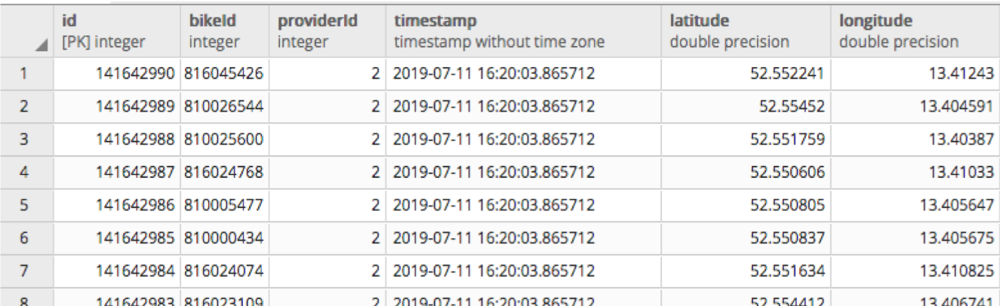
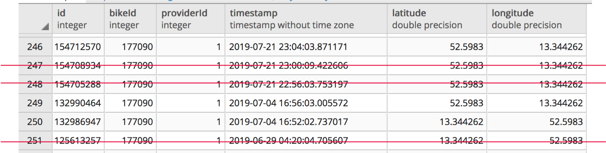
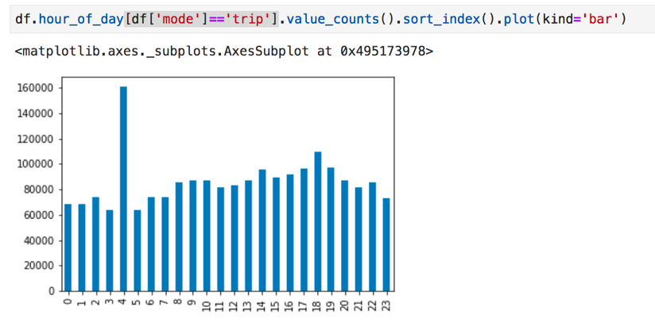
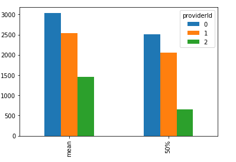

# Summer School: Bike sharing data ### 09.09.2019, Alexandra Kapp und Fabian Dinklage Notes: - Welcome again to the city lab - My name and role, Technologiestiftung Berlin - background in design - prefer to design and implement - Project intro: Together with alexandra - Investigation of bikesharing providers, analyzed and visualized
## Slides https://technologiestiftung.github.io/citylab-slides/mobility-data-pitch/ Notes: - During the input we will share some links for you
## Agenda - Context: Why bike-sharing data - Data collection - Data cleaning and data quality - Prototype
## Context - **Why bike-sharing?** - Detailed mobility data for whole Berlin - Many possibilities: - urban planning, - businesses (e.g. mobility apps), - monitoring of compliance with city laws (e.g. prohibited parking zones) - **Data:** - trips of three bike-sharing providers for Berlin over three months period Notes: - Mobility data provides many perspectives on the urban area of berlin - For Example: This data might help urban planners to spot patterns of how mobility services are used - business ideas through finding the needs fo mobility services - Data could also be used for monitoring by the city. For example to detect false parking..
## Data collection - APIs of bike-sharing providers: real-time locations of all available bikes - **Challenge 1**: Get Data from APIs - [Details on different APIs](https://lab.technologiestiftung-berlin.de/projects/bike-sharing/de/) - **Challenge 2**: Collecting all trips - Query all APIs every 4 minutes - Run script via Uberspace server with a cronjob - store data in a database (AWS RDS Postgres Database) Notes: - Let's have a look on how the data has been collected from us - We decided to investigate 3 bikesharing providers (nextbike, lidl bike, mobike), because they all do have an api - There are a couple of steps necessary to get everything working - If you want to read more about detailed review aboutthe different apis check out the article of my collegue alex - We created a data pipeline that queries every 4 minutes the data of moved bikes - store the raw data inside a database on an aws server
## Data Collection - **Challenge 3**: Amount of Data - With queries every 4 minutes and approx. 10.000 bikes thats: - 150.000 rows each hour - 3.500.000 rows each day - 25.000.000 rows each week  Notes: - If you do the math the data does become quite big very short amount of time
## Data Collection - **Challenge 3**: Amount of Data - After three month 20 GB storage was full - Start of daily cleaning script (again: cronjob on Uberspace): Delete all rows, were the location of the bike did not change (Reduction from 1.5 billion to 5 million rows) _  Notes: - An essential part of dealing with data is actually cleaning and restructuring it - Here are some examples of data removed
## Data Cleaning: Implausible Peaks over time 
## Data Cleaning: Implausible Provider 
## Data Cleaning - **Raw:** 1,5 Billion rows - **After cleaning of database:** 4,9 Mio rows - **Remove data outside Berlin:** 4,8 Mio rows - **Merge locations to trips:** 2,4 Mio. trips - **Remove trips < 200 meters OR trips longer than 24 h OR trips faster than 30 km/h:** 0,5 Mio. trips - **Remove provider with implausible data:** 0,3 Mio. trips Notes: - In summary we got rid of most the data to get high quality data
## Data Dive - Data ### CSVs: https://drive.google.com/drive/folders/1wsXVdBxhKSqpj-fouNM9RbF7NFrLHUvO ###### . ### GeoJSON: https://drive.google.com/open?id=1PnwTsIKMeKBoLlH05fO-_DGiP7glvjil Notes: - Here you can find the preprocessed data in different formats - say a little bit about the format - We also build a prototype which visualizes all trips per day on a map - Used a framework called deck.gl, maybe some of you have heard of it.
## Introducing Deck.gl - visualize large-scale Geospatial Data - variety of visualization layers out of the box available - hardware accelerated (Web.gl) Note: - If you want to handle large geospational datasets - because visualizing them as nodes on the browser can be a pain performance wise - name bullets
## [Our prototype](https://bikesharing.citylab-berlin.org) Note: - We wanted to make the topic of shared mobility more tangible - This visualization is based on the [trips layer](https://github.com/uber/deck.gl/tree/master/examples/website/trips) - Buildings layer added - Camera Handler to show specific spots on the map - daily data is made available through some magic in the backround - Daily Trips peaks Histogram for analysis purposes in d3 - Now let's check out how things work under the hood. - right now I'm working on a way to compare startpoints and destinations of districts over time - you see there's much more to get out of the data
## Outlook Note: - It's always exciting to merge different datasets with another - For example how is the exisiting mobility network extended by bike sharing providers
## Contact: ### Alexandra Kapp kapp@technologiestiftung-berlin.de\ [@lxndrkp](https://twitter.com/lxndrkp) ###### . ###### . ### Fabian Dinklage dinklage@technologiestiftung-berlin.de\ [@fdnklg](https://twitter.com/fdnklg) ###### . ###### . <!-- __citylab-berlin.org__ --> [@citylabberlin](https://twitter.com/citylabberlin)\ [citylab-berlin.org](https://citylab-berlin.org)